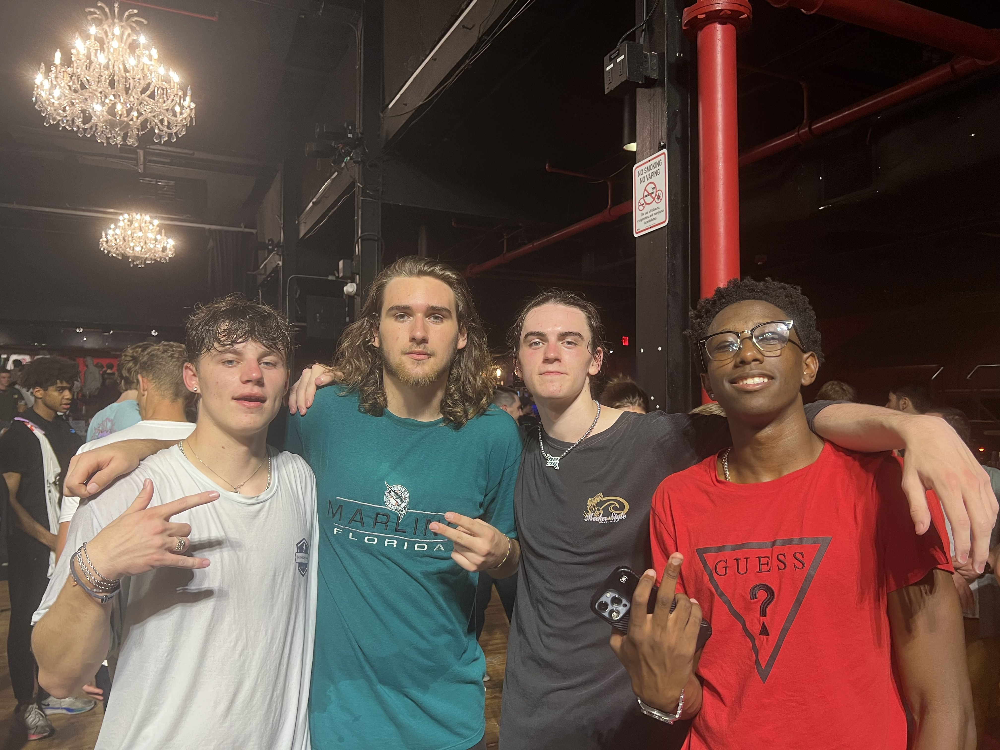

My friends and I after experiencing a Denzel Curry concert
Personal Background:
I was born in San Francisco, CA.
My family moved to Chicago when I was 1 years old, then to New Jersey when I was 8, and finally to North Carolina when I was 14.
I’ve loved gaming since I was a kid playing pokemon on my DS in 1st grade.
This led to me getting interested in computers and eventually going to major in computer science for college.
Professional Background:
No professional background
Acedemic Background:
Sophomore in Computer Science at UNCC
Background in this Subject:
No web development background
Primary Computer Platform:
Mac OS laptop for school, Windows 10 PC at home
Courses I'm in & Why:
ITIS 3135 - Web-Based Application Design and Development -
Requirement for Cyber Security major
ITSC 3146 - Intro Oper Syst & Networking -
Requirement for Comp Sci major
MATH 2164 - Matrices & Linear Algebra -
Requirement for Comp Sci major
LBST 2301 - Critical Thinking and Communication (REED) -
Gen Ed requirement
LBST 2211 - Ethical Issues: Ethical Issues in Personal, Professional & Public Life (PHIL) -
Gen Ed requirement
Funny/Interesting Item about Yourself:
I beat roblox speed run 4 in 6th grade.
I'd also like to Share:
I love animals and playing video games and listening to music and going to the gym.